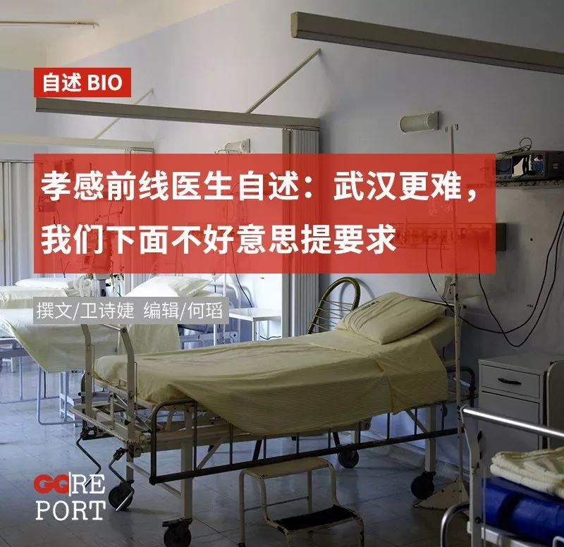
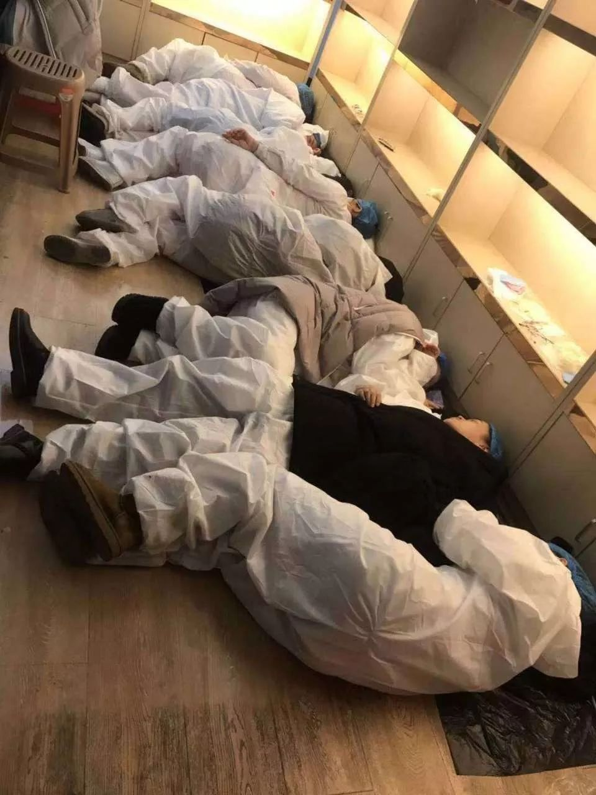
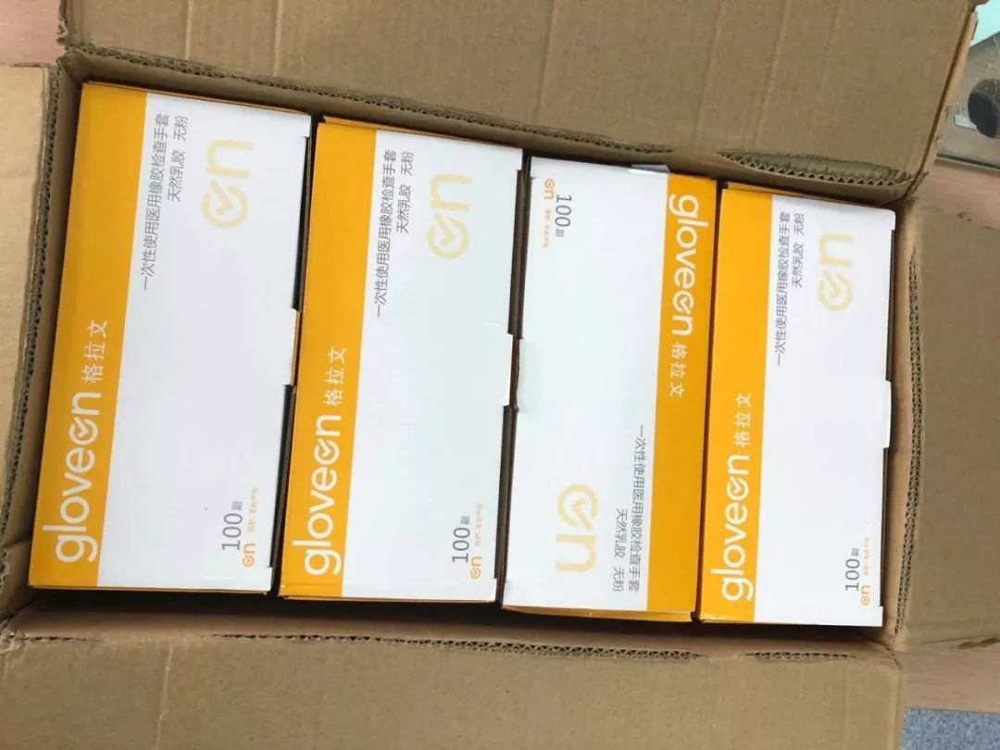

疫情危机中不被看见的人们：武汉周边城市百姓的自救行动
原文链接 备份链接 新型冠状病毒疫情像是一场突如其来的阴霾，在这个冬天笼罩了华中大地。相较于最受关注的武汉市民，周边城市的人们，像是处在阴霾边缘，遭受侵袭，却又不常被看见。面对重重困难，孝感、黄冈、黄石、信阳、荆州、天门……各个城市的百姓 …

武安医生（化名）所在的医院是孝感市三家抗疫医院之一。距离武汉66公里的孝感是距离武汉最近的地级市，截止到1月28日上午，有确诊病例173例。与暴风眼武汉一样，以孝感为代表的武汉周边小城也正在经历着决战时刻。
坐诊之外，武安参与了数十个民间互助组织，将捐赠物资对接到省内的上百家医院，目睹了抗疫前线的最真实画面。
本文电话采访于1月27日晚进行。请继续关注疫区的最新疫情进展。
···············
因为对外发布了求助信息，一个知名基金组织联系上了我。由于我几乎能联系到湖北所有二甲医院以上的一线医生，我开始深入地参与民间物资对接。后来一下子衍生了几十个互助群。现在每天一睁眼就是物资信息。
一些民间团体只认武汉的四大家医院：同济、协和、中南、省人民。底下的小医院不认。可恰恰底下的县市得到的救援更少，情况很迫切。我在互助总群里，同时联系着省内各地的医院，哪家的防护服库存告急，我先派一百防护服过去应急。刚开始有人担心我们下面医院中饱私囊，其实我们把全省医院当成兄弟，自己医院一点也没留。
我们医院一直准备得挺充分。在疫情公布之前，我们院提前买了一批防护服和n95口罩。为了抗疫，院长已经空出了一部分床位做隔离病房。
孝感市此前有两家定点，1月27日新开了一个东南医院定点（原本是私人医院，地广人稀），从别家医院各出一部分医护人员到新定点。因为要支持办新定点医院，我们原先储备的物资就不足了。
其实我们医院物资比武汉还缺，但武汉很惨，我们下面不好意思要。可武汉周边的需求量太大了。就拿我们院来说，现在医院公告，非一线医生不发n95，不向民间求救。偶尔门诊的人受不了了，在社交网络上发一点求助信息，但是没有响应的。门诊的医生想要一件一次性手术衣，要了三天没要到，就穿个白大褂接诊。
我还有一个朋友在孝感市定点医院呼吸科病房，因为物资匮乏，医生只戴口罩接触高度疑似病人，感染风险巨大。科室已经有三个医生发烧。只能把医生和病人关在一起隔离，边隔离，边负责病人的诊疗。我每天都在手机上鼓励这个朋友。他第一天很崩溃，对我说，“我可能会死在里面”。这几天情绪稳定了，他安慰自己，至少现在医院装备全了。
但实际上并不是这样。孝感市唯一一家三甲医院，物资缺到什么程度？护士长召集了所有护士，拆了办公室所有文件夹，扎两个眼，用输液管穿过孔绑在脑袋上，这样就做成了一个防护面罩。有完整的视频攻略教我们几家医院怎么自制护目镜，一直在医生群里流传。医生们进隔离病房之前要喊一声加油，进去的时候穿了防护服但是没有n95。

很多医院一直自称物资充足，可我去到他们的急诊科，看到大夫身上穿的防护服连一级标准都达不到，正常要求至少是三级。他们没有一次性帽子，就去手术室拿鞋套套在头上。社区医生还惨一些（社区医院刚开始不承担任务，突然承担诊疗任务，根本接不过来），把大桶的农夫山泉塑料桶用刀割开套在头上，接上两个过滤器，过滤器里用食盐替代活性炭。
对于本市疫情的情况我也是担忧的。我们孝感刚开始1例都没有，后来一次性报道22例，目前的病例数173例，低于黄冈的213例，这是不太符合流行病学的（因为大数据显示，武汉流向孝感人口多于流向黄冈）。这可能是前期缺少试剂盒，及临床没有确诊权，诊断权在疾控中心有一定关系。
但根据经验，有几点基本可以断定这个人是新冠携带者：1.有疫区接触史。2.血常规白细胞和淋巴细胞大幅降低。3.肺部ct呈现毛玻璃样——如果这些全中，也只能在病例上写“诊断病毒性肺炎可能性大”。但处理都是绝对隔离（终于用上了事先准备的隔离大楼）。
和武汉一样，随着时间推移，后面会有更多确诊病例，不排除超过黄冈的可能。
目前，我们院的一次性手术衣只有400多件，但我们有一千多名医生。医用帽子一个都没有。在病房里我就戴一个普通口罩。春节之前我们科就只有100个外科口罩，护士就用普通口罩带两层三层自己安慰自己，其实大家做过实验，普通口罩戴几层都和一层是一样的。
就是这几天，民间组织问我，我们医院还缺不缺物资？我说我们什么都缺，什么都要。他让我列了个需求单子，我小心翼翼地填，口罩一千个。他们自主帮我把一千个改成了一万个。还有人要花几万块钱买了几百个防毒面具，说这个肯定管用。真的是很感动。
❷
***“希望调整政策，***
***放一些小快递进来”***
其实从官方公布的数字上看，物资问题应该已经解决了。官方数据显示武汉有45万个护目镜。问题在于红会和慈善管控着物资，在民间自助组织里，我们志愿者每天三个人装一集装箱，每天满武汉跑，发物资发到半夜，可红会五十个人忙不过来。

封城之后，车辆封了快递也封了，民间捐助都卡在外面。很多物资的快递是给我们地方的，但是武汉不让过。周边县市的医院只能用120开车去接，接了就跑。黄冈市某三甲医院就开着120跑了127公里到武汉接那720个口罩。接完后立刻返回医院执行接诊任务。这几乎是武汉周边普遍现象。只能开120，其他车过不了高速。26日我给麻城那边的医院分口罩，运送物资的车辆停在一座桥上，桥长一公里左右，医生飞奔往桥的另一端，电话里他气喘吁吁，就怕车辆不等他，就为了1500个口罩。因为他们医院一个口罩都没有了。
就拿民间资助我们的医用手套来说，有两三千双，但一直都在物流上卡着，过不来。从鄂州到麻城因为封路要跑四天。怕物资过不来大家都发顺丰，传说顺丰有绿色通道。到现在顺丰也不敢接了。库存太多发不出去，搞乱了。我就希望能够通过媒体呼吁，希望能适度调整封城政策，放一些小快递进来，风险小，但是能解救临床几百人的安全，医务人员等不了了。现在很多合格的快递在路上没法被接收。
❸
***“拿着钱买不到东西，***
***见到东西就想买”***
还有一点要提醒大家，要小心诈骗。我对接的民间组织中，很多学生把压岁钱拿出来给我们捐。8毛钱的口罩卖6块钱他们都舍得买，这次疫情中出现很多哄抬物价的不法商家。这些孩子为了骗我们接受，就说是花几毛钱买的，实际上很贵。我在群里说，大家冷静一下，不能让那些黑心商人发国难财。食髓知味，会造成更严重的后果。
这两天我进所有群都发现大家在讨论一批国外口罩kf94，2800万只，国外卖三块钱一只，过关要六块以上一只。总额都过亿了。居然有人说要把这2800万只吃下来。kf94号称可以替代n95，但实际上只相当于外科口罩，且未经过我国标准测试。这批口罩的出现我非常存疑，性价比很低。我很担心这批孩子，其实他们没什么钱，这些年轻人拿着手头不多的钱买不到东西，见到东西就想买。
我还很多次在群里发现骗子，他们冒充是民间购买者和商家，煽动群内气氛，但话语里错漏百出。我在群里喊停，没有人理我，我就私信其他成员，告诉他们这是骗子。后来我们大家都不说话，这几个骗子就退群了。
前两天物资进不去武汉，有人说可以来高速公路上接物资，我和同伴一起开车送去。结果对方是假志愿者，接到手后转手就卖了。原本想着这些志愿者冒着自己被感染的风险还在外面跑来跑去，内心非常感动，就没有任何怀疑。后来给医院打电话发现没有接到物资，才知道上当了。
出了这样的极端案例后，我们就开始直接对接医院。再后来我们都直接对接到医生。一些胆小的医院不敢私自接受，但也有一些医院总是接得很爽快，看见物资直接抵达前线，我内心也非常激动。

来自民间捐助的物资
❹
***“总理来了，大家都很振奋”***
大概是在2019年12月20号左右，我知道了冠状病毒的出现。刚开始我们觉得是流感，眼见发热病人越来越多，心想按这种情况下去，非典早晚要再来一场。当时没想到是新型冠状病毒。真正感觉到严重性，是武汉把华南海鲜市场封了。听武汉的朋友说，华南卖野味，此前政府从来都不管。这是个信号。我觉得坏了，疫情要扩散，马上要过年了，止不住了，春运一开始全国都要受影响了，结果果然，每一步都按照我们担心的方向走的。
武汉市内的政务也不太畅通。有一个消息是我经过求证的。上海的医疗团队来武汉支援，人家是带着物资来的，往金银潭派了百八十人。可到了之后，发现病人们没有饭吃，医生们就把自己的饭让给病人，可一直干到下午两三点，还是没有饭吃。医生们向区长反映，对方回答说“我们正在开会解决这个问题”。群里真是在破口大骂：一百个专家没饭吃，这个还要开会来解决？民间有四个人希望给医生们送饭，但是车子不让上路。
1月27日，总理来了，大家都很振奋。总理没来之前，我武汉的朋友说，“我要死在武汉了”。总理去了金银潭医院，视频里大家全在哭。我看到视频时我也哭了。这段时间大家都经历了什么，实在是永生难忘。我希望互相鼓励，但也知道这次一定会是场持久战。
我27日被通知，明天要去东南医院隔离病房了。现在大家都抢着去，没有去到一线，我们觉得很惭愧。几次报名去隔离医院我都是第一个报名的，但是规定主任先上，然后党员上，然后才是非党员。所以没轮到我。这次我第一个报名，无论如何也要去。
可大家都去了本院科室怎么办？医院就说谁后报名谁留在科里。我不管，我第一个报名必须得去。我们退二线的老院长56岁，他最后报名，但也要求一定要去。他56岁了，因为物资紧缺，上发热门诊连一次性手术衣都没穿。

钟南山19号来到武汉，23号武汉宣布封城。这段时间武汉很多人就开始往外跑。到现在我也很愧疚，我不知道向我打听消息的这些人中，有多少是得到消息后就连夜出城的。据我所知，最远的是开车跑到了黑龙江。我的一个邻居，我当时对他说你别走，出去就是害人，如果确定了感染还要判刑的，他现在在北海，他老婆确诊了。
我们小区里有个33岁的女人，她爱人陪她辗转各大医院，没有一家收治的。一个大男人陪他老婆每天哭哭啼啼的，但他们夫妻很负责任，没有回小区，一直都在外面的酒店住。前几天他们被一家乡镇卫生院收治了，我27日一早给他发信息，到现在也没回。
（采访时不停咳嗽）我之前得过流感，因为带病坐诊，五个星期都没好。这些天每次咳嗽都怕别人害怕，于是不停吃镇咳药。
我把老婆孩子送回了老家。他们每天都和我联系。我报名去了隔离医院，没和老婆说，但她了解我，问我你是不是报名了要去？她说你报了就和我说，我不会阻止你，但是你自己要做好防护，没有防护的时候不要把防护让给别人。
她知道我能干出这种事。没办法，身为医生，这个时候顾不了那么多了。我要对得起自己的良心。我们一个前线大夫，很多天没有回家了，有天和孩子视频，孩子对着屏幕说，爸爸你别动，我抱一下你。就是孩子太想他了。
武汉周边城市的多家医院，仍有物资缺口，急需社会各界予以援助。如有援助捐赠意向，请您点击文末的阅读原文，查看各城市医院联系方式，与其取得联系。让我们一起帮助疫区百姓渡过难关！
GQ报道正在征集疫情防治的相关采访信息，如果您身处疫区、受到疫情影响，或是了解对疫情防治有促进作用的各类信息，欢迎随时与我们联系！
无论您是医护人员、患者及家属、疑似患者、物资供应方、运输方、志愿者、疫区服务业人员、了解疫情知识的专业人士……我们随时准备听到您的声音！
您可以在本文评论区、公众号后台留言，或发送邮件至gqreport@163.com 留下您的联系方式和您能够提供的信息摘要，我们会第一时间与您取得联系。
让我们一起努力，共渡难关！


在公众号后台回复彩蛋，送你一个彩蛋
撰文：卫诗婕
编辑：何瑫
运营编辑：肖呱呱


原文链接 备份链接 新型冠状病毒疫情像是一场突如其来的阴霾，在这个冬天笼罩了华中大地。相较于最受关注的武汉市民，周边城市的人们，像是处在阴霾边缘，遭受侵袭，却又不常被看见。面对重重困难，孝感、黄冈、黄石、信阳、荆州、天门……各个城市的百姓 …
原文链接 备份链接 自新型肺炎疫情爆发以来，湖北乃至全国多个省份的医院因防疫物资短缺，向社会发出求助。而另一种声音却在说防疫物资是充足的，没有短缺。一时之间，防疫物资成为了薛定谔的猫。 今日来信的这位作者，便是自发为一线医院筹集防疫物资的 …
原文链接 备份链接 医疗防护资源不足是常态，各地资源调配需平衡，“灯下黑”区域渐次光亮，但少数地区的疫情宣传依旧不到位 外地务工返乡者最担忧的问题是年后经济收入断流、地域歧视，担心节后可能无法返工 本文首发于南方人物周刊 文 | 本刊记 …
原文链接 备份链接 春节期间，街边摆摊卖走亲戚用礼品盒的越来越少，仅有的几个摊主都戴着口罩。一位摊主介绍：“今年来买东西的少了，路上的人也少了。”说完话，他下意识紧了紧鼻头的口罩。 全文3623字，阅读约需7分钟 距离武汉900公里的河 …
原文链接 备份链接 在这场抗击新病毒的战争中，一线医护人员不得不为自身防护揪心，他们和医院、捐赠人一起被迫卷入一场医疗物资的募捐赛 文 |《财经》记者王丽娜 辛颖 编辑 | 王小 这是历次疫情中，一线医院大批量第一次直接向公众募捐，也是 …